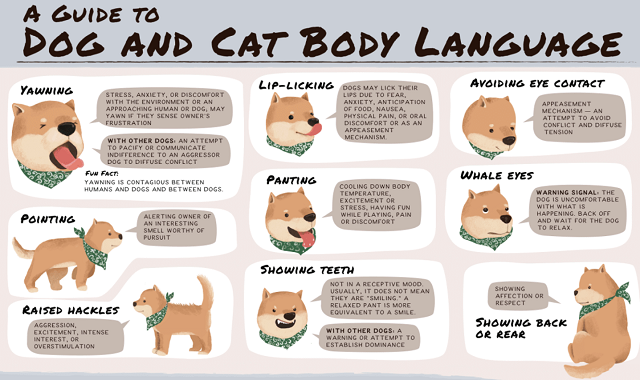
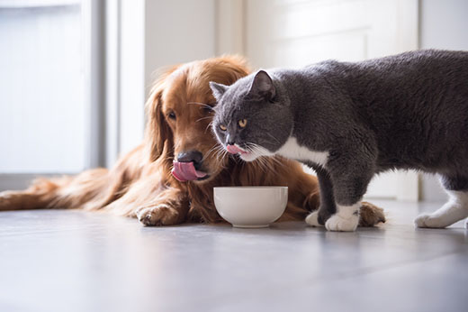
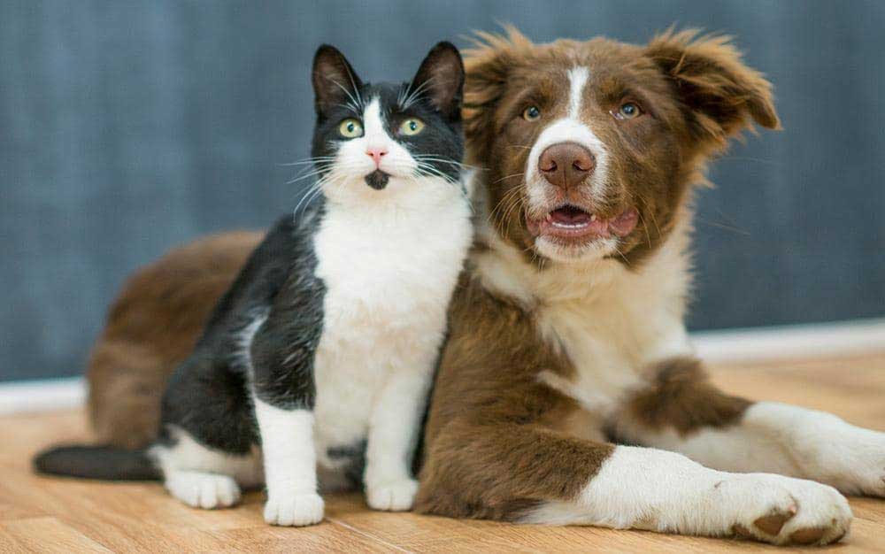
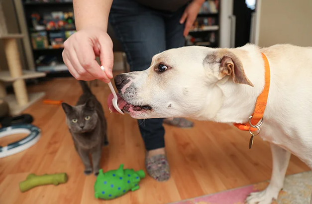
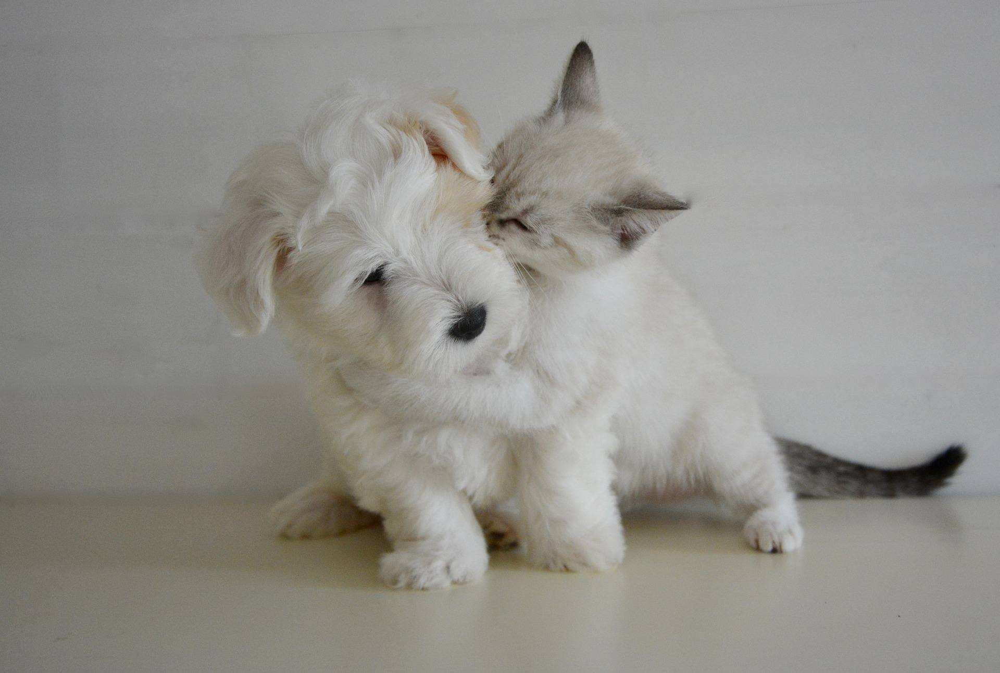

Some dogs do fine living with cats; others simply cannot live safely with felines. Sometimes, a dog can live with certain cats (depending on their age, temperament and activity level), but not others. Even if your dog has successfully lived with cats in the past, it is important to remember that each dog and each cat is an individual and therefore each introduction is different.
When introducing your dog to a cat, pay attention to the body language of both animals. If the cat’s ears are pinned back or his tail is swishing back and forth, this is a good indicator that he is displeased. You particularly want to be aware of dog body language that could be potential warning signs. If your dog has a strong prey drive (the inclination to seek out, chase and potentially capture animals seen as prey — usually smaller animals such as cats or rabbits), she might become very focused on the cat. She’ll stiffen, stare, and may start barking or whining. If you see these signs, do not let her near the cat. Ideally, her body language will be loose and relaxed around the cat. It’s OK if she pays attention to the cat, but you don’t want to see her fixated on him. In addition, a dog’s interaction with a cat can change depending on the environment. Just because your dog is OK with the cat inside the house doesn’t mean she’ll exhibit that same behavior outdoors. She might fixate on the cat and start stalking him when they are outside together. So, be aware of her body language around the cat in each new situation, until you know how she is going to respond toward him.
There are many different ways to introduce a dog to a cat. If the first method of introduction you try doesn’t work or you don’t feel comfortable with it, try a different option. Even if the dog has had experience with cats and the cat has lived with a dog before, proceed cautiously during the introduction. It’s best to have two people present — one to intervene with each animal, if necessary. If you have more than one dog, introduce each dog separately to the cat.
If your dog is too fixated on the cat, you can try desensitization, the goal of which is to reduce your dog’s reaction to the cat by gradually increasing her exposure to him. Put the cat in a room (e.g., a bedroom, a bathroom or a spare room) with a tall baby gate across the door. The room you choose should be one the dog cannot access and doesn’t need to access. For example, if the dog sleeps in the bedroom with you at night, don’t pick that room for the cat. The idea is to separate them and only allow them to view each other during specific times.
In his room, give the cat all needed supplies: litter box, toys, food and water. Keep in mind that cats are good at squeezing through small gaps and are also good climbers and jumpers. So, make sure your cat can’t get past the gate you put up. The gate needs to be a barrier that allows the cat and dog to see one another, but does not allow them to access each other. To begin desensitization, let the dog view the cat briefly through the gate, and then get the dog to focus on something else, such as playing with a toy or practicing cues. Sometimes it helps to keep the dog on leash so that you can move her away from the cat when you try to refocus her attention. Praise and reward the dog for being able to focus elsewhere. Continue to give the dog short viewings of the cat throughout the day. Sometimes, even seeing the cat at first is too exciting for the dog. If this is the case, close the door and begin feeding each animal on his or her side of the door: The cat eats his food in his room, right next to the door, and the dog eats her meal on the other side of the door. This allows each animal to associate the smells of the other with something good: food. You can also swap out the blankets and bedding of each animal, giving it to the other. That way, the dog can get used to the cat’s smell and the cat can get used to the dog’s smell, without overstimulating either of them. Hopefully, through this process of slowly letting the dog see the cat and get accustomed to the cat’s presence, the dog will eventually become desensitized and lose interest in the cat. In some cases, the dog will lose interest in the cat within a couple of hours, but it can take days, weeks or even months. Each dog (and each cat) is an individual and will learn at his or her own pace. With that said, though, it is possible that your dog may not ever be able to safely share space with a cat. If you don’t feel you can trust your dog around your cat, you should keep them apart. Many dogs can injure or kill a cat very quickly, and your dog can also be injured by the cat. Your first priority should be ensuring that everyone stays safe.
This is a more fast-paced introduction. One person should hold the dog on a loose lead and watch the dog’s body language. Someone else should watch the cat’s body language. If the cat is not raising his back or hissing around the dog, he can be allowed to move around freely. A cat is rarely a threat to a dog, but some cats will be on the offensive when meeting dogs. If the dog is calm around the cat, you can ask the dog to sit, or lie down and stay, if she has been taught those cues, while the cat moves about freely, sniffing the dog if he wishes. The dog should be praised and rewarded if she ignores the cat. If the dog is too fixated on the cat (e.g., staring at the cat, has stiff body language, will not listen to you when you call her name) or if she lunges and tries to chase the cat, you should try a different strategy for getting them to share space, such as Option 1 or Option 3.
If the quick introduction did not work and your dog is not becoming desensitized to the cat, you might need to try some more structured training. By playing Look at That (LAT) with your dog, you can help to teach her not to fixate on the cat. You’ll be teaching her to look at the cat and then look back at you for a treat. Essentially, she’ll learn that it is more rewarding to not pay attention to the cat.
To start working on LAT, you need to figure out the dog’s threshold while on leash: At what point does she notice the cat, but still respond to you when you say her name? That is her threshold. Each dog has a different threshold. For one dog, five feet away from the cat might be her threshold; for another dog, it might be 25 feet. You’ll know you have gone past the threshold when she starts barking or lunging at the cat. Another sign that you’re getting too close to the cat is if she starts moving more slowly, staring and stiffening her body. If you call her name and she doesn’t respond to you, move a few feet away from the cat.
Once you’ve figured out the dog’s threshold, grab a clicker and some really delicious, pea-sized treats. If you don’t have a clicker, a verbal marker (a word like “yes” or “good”) will work just fine. Put 10 treats in your hand and keep the bag close by for later.
When you see the dog looking at the cat, click the clicker or use your verbal marker and give her a treat. The first few times, you might have to put the treat right in front of her nose, but fairly soon she should start looking expectantly at you as soon as she hears the marker. That’s because the marker (either a clicker or a word like “yes”) always means a treat is coming. Use up the 10 treats, clicking as soon as she looks at the cat.
The 11th time, before using the marker, wait and see if she will look at the cat and then look right back at you. If she does that, either click or use the verbal marker when she looks at you and then give her a treat. If that doesn’t happen, go back a step. Mark her 10 more times for looking at the cat and then try again. Once she is reliably looking at the cat and then looking back at you, you can slowly start moving closer and closer to the cat. If the dog becomes fixated on the cat when you move closer, you’ve gone past the threshold and need to move back.
As you train, her threshold decreases, which means that the two of you will be able to move closer and closer to the cat. Continue practicing LAT with your dog until she can be right next to the cat without an issue. How quickly your dog’s threshold decreases will depend on you (how much you practice and the types of treats you use), your dog (since every dog learns at a different pace) and your cat’s comfort level.
If you are introducing a kitten to a dog, keep in mind that kittens may not have any fear of dogs, so you must watch the dog carefully. Because kittens are small and want to run and play, dogs with a strong prey drive may be very excited by a kitten’s movements. Even if your dog is OK with your adult cats, it is important to watch her closely when she’s with a kitten. If your dog is young and high-energy, she could hurt or kill the kitten simply by trying to play. So, for safety’s sake, keep kittens and dogs apart any time you are not watching them.
Introducing adult cats to puppies can sometimes be easy, since a well-socialized adult cat might be fine with a puppy acting like a puppy. However, if your rambunctious puppy is chasing your shy cat, it is up to you to intervene. Until the puppy is old enough to have more self-control and has had some training, you will want to manage their interactions. You don’t want your puppy to learn that chasing the cat is a fun game. Baby gates can be used to keep the animals safely and comfortably apart. To help you keep an eye on your puppy, you can also put her on a leash. That way, if she begins to chase the cat, you will be able to easily direct her away from that behavior.
Animals with good past experience often adjust well and quickly to a new pet in the house. But if introductions don’t go well, seek help from a professional dog trainer or behavior consultant. Don’t ever use punishment: It will not help and it could make matters much worse.